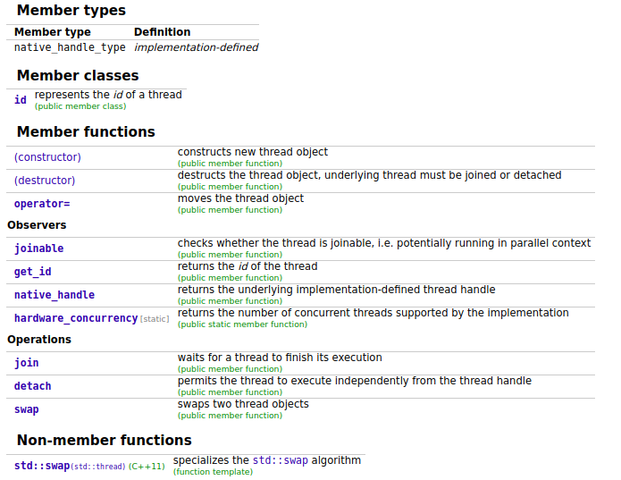

最近在学习c++方面的线程, 学习资料为<
an overview of thread in std
在c++11之后, stl可开始支持多线程了, 这对于c++程序员来说无疑是一个福音,
无需再使用不同版本, 不同操作系统的线程库, 直接使用标准库的线程支持.
在标准库中线程相关的功能定义在\

在c++中, 直接通过thread的构造函数启动线程, operator=和析构函数对应线程的管理.
Observers为线程的状态管理, Operations为线程的一些操作,
下面我们具体地来看下这些用法以及可能遇到的一些坑.
before launch
线程比较合理的方式是将cpu所有的核心都启动起来, 所以在启动线程之前,
能够获取到系统支持的核心数通常会是很有用的. 在c++~
launch a thread
- declare a thread correctly
- pass parameters(not xxx, std::ref to the expected one)
ps: the exception throwed by the sub-thread can not catch by the main thread.(with reference)
runtime
- ownership tranform
- identify of a thread
before the end
- join(exception or finish normally), thread guard, scope guard
- detach(no longer joinable)